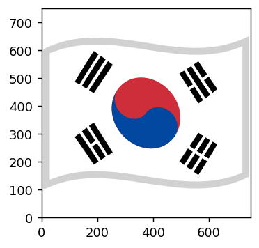

import pandas as pd
import io
csvs = """Country,2024 Real GDP % Change,Code
India,6.5,IN
Indonesia,5,ID
China,4.6,CN
Türkiye,3,TR
Argentina,2.8,AR
Mexico,2.7,MX
Saudi Arabia,2.7,SA
Russia,2.6,RU
Korea,2.2,KR
U.S.,2.1,US
Brazil,1.7,BR
Canada,1.4,CA
Australia,1.2,AU
France,1,FR
South Africa,1,ZA
Japan,0.9,JP
Italy,0.7,IT
United Kingdom,0.6,GB
Germany,0.5,DE
"""
df = pd.read_csv(io.StringIO(csvs))We would like to reproduce the plot from https://posts.voronoiapp.com/economy/GDP-Growth-Across-the-G20-Western-Economies-Lag–663, only the barchart part.
Here is the full example
Later, we will provide more elaborated one.
import matplotlib.pyplot as plt
import seaborn as sns
from matplotlib.offsetbox import (TextArea, DrawingArea, AnnotationBbox, VPacker)
from matplotlib.patches import Circle
from mpl_flags import Flags
fig, ax = plt.subplots(1, 1, num=1, figsize=(7, 10), clear=True,
facecolor="gold")
countries = df["Country"]
gdp_changes = df["2024 Real GDP % Change"]
country_codes = df["Code"]
palette = sns.color_palette("crest", n_colors=len(countries))
palette.reverse()
sns.barplot(x=gdp_changes, y=countries,
hue=countries,
palette=palette,
width=0.9,
ax=ax)
for country, gdp_change, bar in zip(countries, gdp_changes, ax.patches):
t1 = TextArea(country, textprops=dict(size=10))
t2 = TextArea(f"{gdp_change}%", textprops=dict(size=14))
tt = VPacker(align="left", children=[t1, t2], sep=2)
ab = AnnotationBbox(tt, (1, 0.5), xybox=(5, 0),
frameon=False,
xycoords=bar,
boxcoords="offset points",
box_alignment=(0., 0.5))
ax.add_artist(ab)
flags = Flags("circle")
kw = dict(frameon=False,
box_alignment=(0.5, 0.5))
for country, code, bar in zip(countries, country_codes, ax.patches):
# draw white circular background around the flags
da = DrawingArea(20, 20, clip=False)
da.add_artist(Circle((10, 10), 15, ec="none", fc="w"))
ab = AnnotationBbox(da, (0, 0.5), xycoords=bar, **kw)
ax.add_artist(ab)
da = flags.get_drawing_area(code, wmax=25)
ab = AnnotationBbox(da, (0, 0.5), xycoords=bar, **kw)
ax.add_artist(ab)
from matplotlib.patches import FancyArrowPatch
da = DrawingArea(70, 10, clip=False)
arrow = FancyArrowPatch(posA=(0, 5), posB=(70, 5),
arrowstyle='fancy,tail_width=0.2', connectionstyle='arc3',
mutation_scale=15, ec="none", fc="w")
da.add_artist(arrow) # Circle((10, 10), 15, ec="none", fc="w"))
t1 = TextArea("2024 Real GDP % Change", textprops=dict(size=12, color="w"))
tt = VPacker(align="right", children=[t1, da], sep=2)
ab = AnnotationBbox(tt, (0.98, 0.5), xycoords=ax.patches[0],
frameon=False,
box_alignment=(1, 0.5))
ax.add_artist(ab)
fig.subplots_adjust(top=0.95, bottom=0.05)
fig.set_facecolor("gold")
ax.set_axis_off()
plt.show()
We will start the example by introducing mpl-flags package. mpl-flags contains the flag data in vector format readily usable with Matplotlib. The original flags data are in svg format, and are converted to matplotlib’s Path data using mpl-simple-svg-parser. mpl-flags does not contain the original svg files, only the converted data in numpy format (vertices and codes).
from mpl_flags import Flags
flags = Flags("noto_waved") # You initialize the Flags class specifying what kind of flags you like to use.
# `noto_waved` is flags from google's noto emoji fonts.
fig, ax = plt.subplots(figsize=(3, 3))
flags.show_flag(ax, "KR")
show_flag method draws the flag in data coordinate.
The flag data is collected from various sources. Currently, it includes flags from
- Google’s noto color emoji font : https://github.com/googlefonts/noto-emoji
- circle-flags : https://github.com/HatScripts/circle-flags
- flag-icons : https://github.com/lipis/flag-icons
Different sources can render the flags differently. You may compare flags of different sources.
fig = plt.figure(figsize=(8, 4), constrained_layout=False)
sspec = fig.add_gridspec(1, 1)[0, 0]
country_code = "KR"
Flags.show_flag_kinds(sspec, country_code)
So, there are 6 flag kinds from 3 sources.
The country code is based on 2 letter code https://en.wikipedia.org/wiki/ISO_3166-1_alpha-2 Note also that some flags are missing from some sources.
Flags.print_flags_summary()[All Codes]
AC AD AE AF AG AI AL AM AN AO AQ AR AS AT AU AW AX AZ BA BB BD BE BF BG BH
BI BJ BL BM BN BO BQ BR BS BT BV BW BY BZ CA CC CD CF CG CH CI CK CL CM CN
CO CP CQ CR CU CV CW CX CY CZ DE DG DJ DK DM DO DZ EA EC EE EG EH ER ES ET
EU FI FJ FK FM FO FR FX GA GB GD GE GF GG GH GI GL GM GN GP GQ GR GS GT GU
GW GY HK HM HN HR HT HU IC ID IE IL IM IN IO IQ IR IS IT JE JM JO JP KE KG
KH KI KM KN KP KR KW KY KZ LA LB LC LI LK LR LS LT LU LV LY MA MC MD ME MF
MG MH MK ML MM MN MO MP MQ MR MS MT MU MV MW MX MY MZ NA NC NE NF NG NI NL
NO NP NR NU NZ OM PA PC PE PF PG PH PK PL PM PN PR PS PT PW PY QA RE RO RS
RU RW SA SB SC SD SE SG SH SI SJ SK SL SM SN SO SR SS ST SU SV SX SY SZ TA
TC TD TF TG TH TJ TK TL TM TN TO TR TT TV TW TZ UA UG UK UM UN US UY UZ VA
VC VE VG VI VN VU WF WS XK XX YE YT YU ZA ZM ZW
[Missing Codes]
noto_original: YU UK AN FX XX CQ PC SU
noto_waved: YU UK AN FX XX CQ PC SU
1x1: YU AC UK EA AN FX TA CQ SU
4x3: YU AC UK EA AN FX TA CQ SU
circle: PC
simple: PCAbove example of Korean flag is relatively simple and are modstly identical among kinds. However, for a bit complicated flags, different kinds show different flags. “circle” and “simple” show simplified flags without much details, best for small size, while other kinds reproduce the original flags.
fig = plt.figure(figsize=(8, 4), constrained_layout=False)
sspec = fig.add_gridspec(2, 1)[0, 0]
country_code = "US"
Flags.show_flag_kinds(sspec, country_code)
sspec = fig.add_gridspec(2, 1)[1, 0]
country_code = "VG"
Flags.show_flag_kinds(sspec, country_code)mpl-flags package itself does not provide a mechanism to search for the country from common country name. For that, you may use packages like https://github.com/pycountry/pycountry
In the above example, we used show_flag method to draw the flag in data coordinate. Often, this is not you want. You want it to behave like texts.
Thus you are recommended to use get_drawing_area method. This returns matplotlib.offsetbox’s DrawingArea instance.
If you are not familar with these, you may take a look at https://matplotlib.org/stable/gallery/text_labels_and_annotations/demo_annotation_box.html
from matplotlib.offsetbox import AnnotationBbox
flags = Flags("noto_original")
fig, ax = plt.subplots(figsize=(3, 3))
da = flags.get_drawing_area("KR", wmax=100)
ab = AnnotationBbox(da, (0.5, 0.5), frameon=True,
box_alignment=(0.5, 0.5))
ax.add_artist(ab)<matplotlib.offsetbox.AnnotationBbox at 0x7f5d809dec20>Now, let’s get back to our original example. We will start with a bar chart withour flags. Note that we are adding texts using AnnotationBbox and providing the bar itself as a coordinate, which means we will use a coordinate that is normalized to the extent of the bar.
# Set up the matplotlib figure
import matplotlib.pyplot as plt
import seaborn as sns
from matplotlib.offsetbox import (TextArea, DrawingArea, AnnotationBbox, VPacker)
from matplotlib.patches import FancyArrowPatch
fig, ax = plt.subplots(1, 1, num=1, figsize=(7, 10), clear=True,
facecolor="gold")
countries = df["Country"]
gdp_changes = df["2024 Real GDP % Change"]
country_codes = df["Code"]
palette = sns.color_palette("crest", n_colors=len(countries))
palette.reverse()
sns.barplot(x=gdp_changes, y=countries,
hue=countries,
palette=palette,
width=0.9,
ax=ax)
# Add text labels of country name and percentage
for country, gdp_change, bar in zip(countries, gdp_changes, ax.patches):
t1 = TextArea(country, textprops=dict(size=10))
t2 = TextArea(f"{gdp_change}%", textprops=dict(size=14))
tt = VPacker(align="left", children=[t1, t2], sep=2)
ab = AnnotationBbox(tt, (1, 0.5), xybox=(5, 0),
frameon=False,
xycoords=bar,
boxcoords="offset points",
box_alignment=(0., 0.5))
ax.add_artist(ab)
# For the top bar, we add text explaing the current plot.
da = DrawingArea(70, 10, clip=False)
arrow = FancyArrowPatch(posA=(0, 5), posB=(70, 5),
arrowstyle='fancy,tail_width=0.2', connectionstyle='arc3',
mutation_scale=15, ec="none", fc="w")
da.add_artist(arrow) # Circle((10, 10), 15, ec="none", fc="w"))
t1 = TextArea("2024 Real GDP % Change", textprops=dict(size=12, color="w"))
tt = VPacker(align="right", children=[t1, da], sep=2)
ab = AnnotationBbox(tt, (0.98, 0.5), xycoords=ax.patches[0],
frameon=False,
box_alignment=(1, 0.5))
ax.add_artist(ab)
# adjust subplot parameters and set the backgrond to gold.
fig.subplots_adjust(top=0.95, bottom=0.05)
fig.set_facecolor("gold")
ax.set_axis_off()We are now going to add flags. If you know how annoatation_box works, adding flags is very straight forward. In the example below, we will create two DrawingArea per bar. The first one is to draw a white background circle for the flags. And another DrawingArea for flags of circle kind.
from matplotlib.patches import Circle
from mpl_flags import Flags
flags = Flags("circle")
kw = dict(frameon=False,
box_alignment=(0.5, 0.5))
for country, code, bar in zip(countries, country_codes, ax.patches):
# draw white circular background around the flags
da = DrawingArea(20, 20, clip=False) # since we are using box_aligment=(0.5, 0.5) and clip=Flase,
# the size of Drawing Area does not realy matter
da.add_artist(Circle((10, 10), 15, ec="none", fc="w")) # place the circle at the center of the drawing_area.
ab = AnnotationBbox(da, (0, 0.5), xycoords=bar, **kw)
ax.add_artist(ab)
# Now we draw flags.
da = flags.get_drawing_area(code, wmax=25)
ab = AnnotationBbox(da, (0, 0.5), xycoords=bar, **kw)
ax.add_artist(ab)